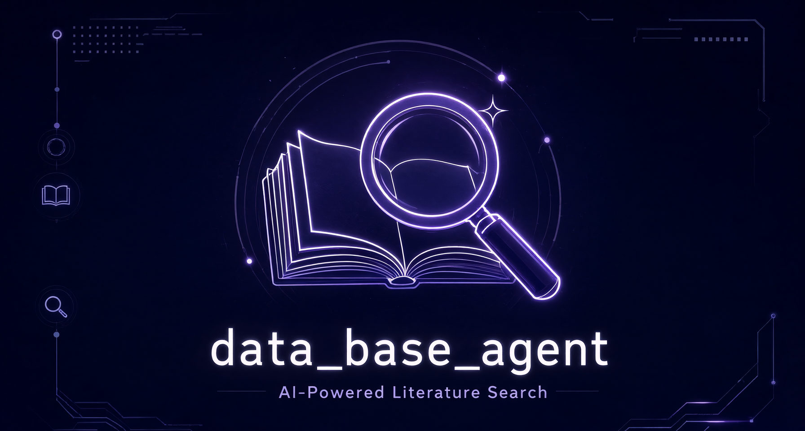

AI AGENT · ACADEMIC LITERATURE SEARCH
data_base_agent
把模糊的研究想法，翻译成精准的文献检索方案。
面向上海交通大学学生的智能文献检索辅助工具。用多轮对话澄清你的研究问题， 生成结构化的「需求翻译卡」，再自动完成检索，返回论文元数据、摘要、DOI 与 BibTeX。

00 / INTRO
产品介绍
00 / TUTORIAL
视频教程
01 / PROBLEM
检索文献时，你是否也卡在第一步？
- 不知道用什么关键词想搜文献，却迟迟想不出合适的检索词。
- 结果太多太杂检索返回海量条目，真正相关的却藏在噪声里。
- 问题表述不清不清楚自己的研究问题该如何准确表述。
02 / FEATURES
核心能力
从「一句话想法」到「可执行的检索方案 + 论文列表」，全程对话式完成。
智能对话澄清
最多 10 轮交互澄清需求，主动给出假设供你确认或纠正，可随时跳过或退出。
需求翻译卡
输出结构化检索计划：问题解读、关键词组合、查询建议与不确定性标注，YAML 格式可复用。
多源文献检索
SciMaster MCP 优先检索；未配置或失败时自动回退 Crossref 与 arXiv 免费接口。
结构化结果
返回元数据、摘要、URL、DOI 与 BibTeX，直接可用于论文写作与引用管理。
CLI + GUI 双端
终端命令行与桌面图形界面两种入口，按习惯自由选择。
一键打包分发
内置 PyInstaller 打包脚本，一条命令生成可分发的 EXE。
03 / WORKFLOW
工作流程
- 描述想法用一句话写下你模糊的研究兴趣。
- 对话澄清Agent 复述理解并追问关键细节，直至对齐。
- 确认翻译卡生成需求翻译卡，你确认或修改检索计划。
- 检索交付自动检索并展示论文结果与引用信息。
04 / QUICKSTART
快速开始
TERMINALbash
# 1. 安装依赖 $ pip install -r requirements.txt # 2. 配置（可选：填入 SciMaster API Key） $ cp .env.example .env # 3. 启动：CLI 或 GUI $ python src/main.py $ python gui_launcher.py # 4. 可选：打包为 EXE $ pip install pyinstaller && python build_exe.py
05 / SPECS
技术规格
- LANGUAGE
- Python 3.8+
- ARCHITECTURE
- 状态机对话控制
- PROTOCOL
- MCP（SciMaster）
- SOURCES
- SciMaster · Crossref · arXiv
- SERIALIZATION
- PyYAML 需求卡
- INTERFACE
- CLI / 桌面 GUI